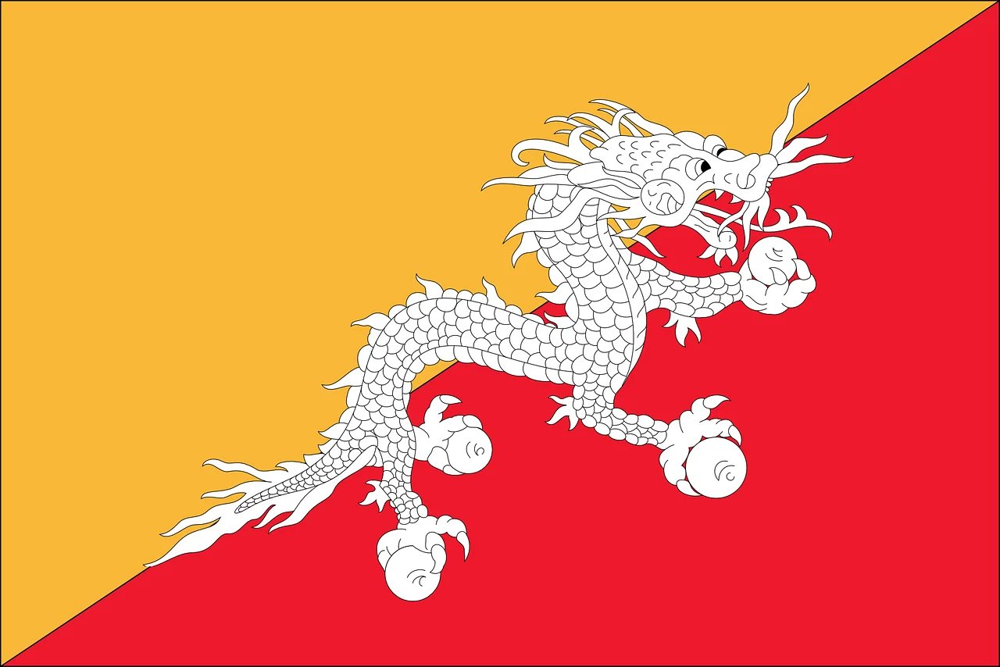
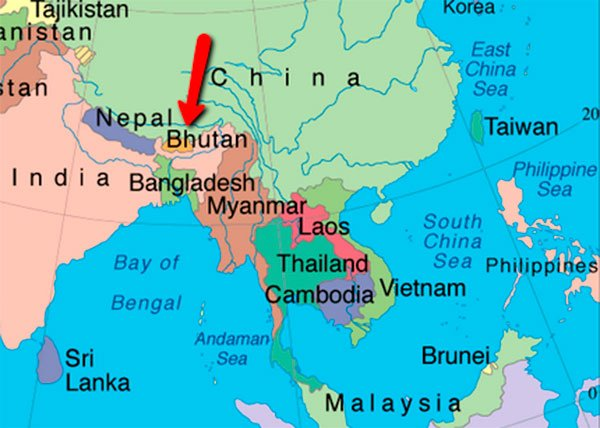

¿Cuáles son sus creencias?

Creencias
Budismo Gelugpa
La religión de los Broq-Pa es el budismo Gelugpa y Ama Jhomo es su deidad principal. Rezan a sus dioses pidiendo protección. Celebran festivales.

Grupo ÉtnicoLos Broq-Pa de Bután hablan una lengua llamada Brokkat. Viven en la región de Merak Sakten, en Bután. La mayoría reside en la India, aunque también hay algunos en Pakistán.

Los Broq-Pa son en parte nómadas y viven en un clima difícil. Crían yaks y ovejas y venden productos lácteos para subsistir. Los ricos poseen muchos yaks.
Los Broq-Pa van a algunas aldeas a intercambiar sus productos por alimentos. Para ello, están conectados con ciertas familias de estas aldeas.
Algunos Broq-Pa son pobres y trabajan como carpinteros, herreros y sastres. Hombres y mujeres reciben el mismo trato, y las mujeres a menudo desempeñan un papel protagónico en asuntos como los matrimonios de sus hijos. La poligamia es aceptable y suelen consultar con astrólogos temas relacionados a la muerte.
La religión de los Broq-Pa es el budismo Gelugpa y Ama Jhomo es su deidad principal. Rezan a sus dioses pidiendo protección. Celebran festivales.